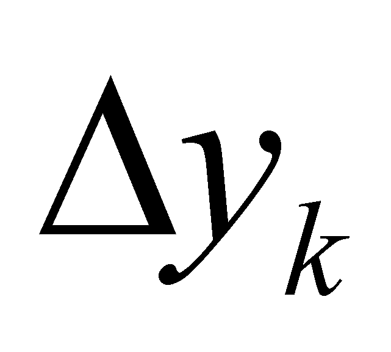

|
|
|
So far, we have discussed only about distributions which had a single type of support attribute (a single independent variable) because it was the most simple case of support and only the clear understanding of the distribution concept was important. If the distributed attribute y simultaneously depends on many variables (independent both in relation to y and each other), relation 2.2.1 (based on the simplifying assumption that it is a function) may be written as it follows:
(2.6.1)
In this case, we are dealing with the classic situation of a continuous function with many variables. As for the multiple support distributions, it is important to understand that this support is made-up from the union of n individual ranges of each variable, each combination of distinct singular values which may be assigned to the n variables being related to a single value of y. Otherwise speaking, an element belonging to this distribution (in case of the primary realizable distribution) is made-up from a normal value y associated through relation f to n normal simultaneously-existent values of the multiple support. In such case of a multiple support (also known as multidimensional, such is, for instance, the Euclidean 3D space), the relations 2.2.5 and 2.2.8 are also multiplied by n folds. Therefore, we shall have:
,
 ,
…
(2.6.2)
,
…
(2.6.2)
relations which display the partial density values of the primary distribution elements, where are linked by means of the following relation:
(2.6.3)
are the fractions belonging to the value of the distributed attribute yk which correspond to each support variable. The same expression shall be written for the density of the first rank derivative distribution:
, ... (2.6.4)
where are the specific variations of the distributed amount  due to the corresponding variations of the support elements (variables), the specific variations being the elements of the total variation:
(2.6.5)
It must be mentioned that the density values given by the relations 2.6.4 are achieved under the conditions of a total invariance of the other n-1 support variables. These density values are the equivalent of the first rank partial derivatives from the differential calculus and the relation 2.6.5 is the equivalent of the total differential of the function f of variables n. The high-rank density values of the distributions and the variations of the same rank of the distributed attribute shall be approached again in the following chapters.
Copyright © 2006-2011 Aurel Rusu. All rights reserved.